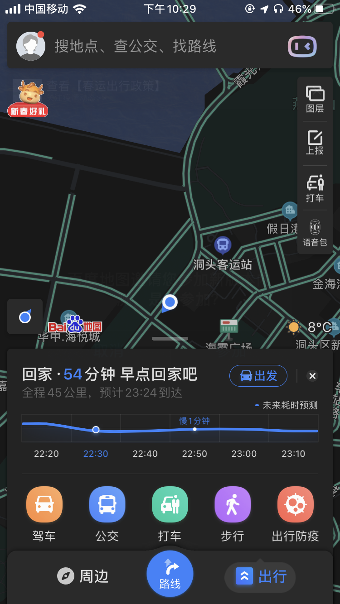
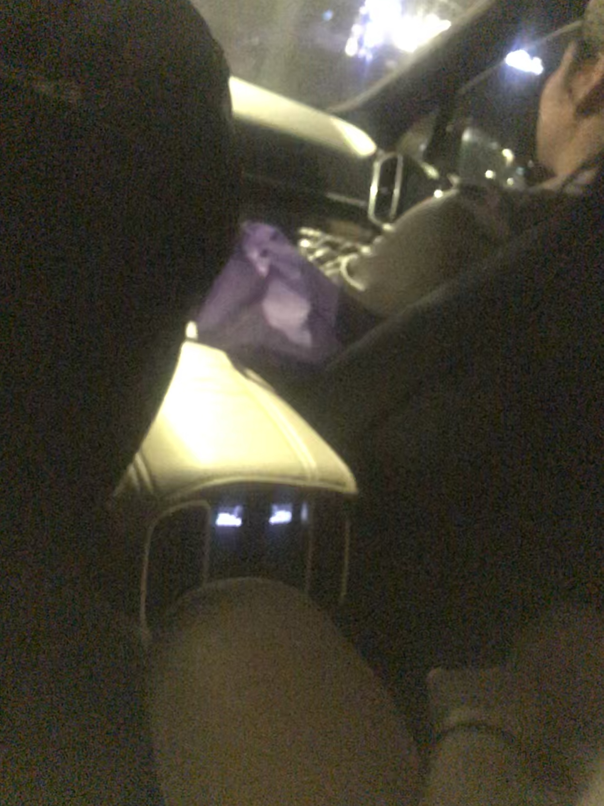

今天是期末考试 早上从你旁边经过 看着你的眼睛 总感觉你眼中黯然失色 很失落 感觉 不像是真正的你
不会意思哈
今天不是沈雯静生日吗.... 人家说让我祝他生日快乐
不说又不好意思是吧 毕竟以前是同学 但是单单发个生日快乐又显得我很low 是吧=.=

但是人家之后又发了朋友圈 我记得你是有他朋友圈的 也不好意思说
想和你说却又不行 是吧 (你懂的吧)ψ(*｀ー´)ψ
这是我刚学到的下划线哦
虽然你删了我的微信 但是我还是可以看到你的微信哟

今天你+了个微信状态 哈哈 是不是刚刚才看到的这玩意尝尝鲜
因为你马上就不用这个了啊，总是喜欢看看你 嘿
这个电话号码是错的吧-.- 是不是换电话号码了 哈哈
想办法 找你现在电话号码是多少. 说实话 不现实 但是我还是想试一试┗( ▔, ▔ )┛
还是等你想自己告诉我的那一天吧. 嗯呵.
依旧Sorry 啊...
这么久了 破事还是这么多..
今天出去吃饭了 哈 和陈小芬一起
路上他们聊得挺多的 我也就听听==
 反正 算了 不跟你说了 你还是不知道比较好. 反正就觉得挺不好的.. 以后有机会在和你说=.=
今天是2.8号 不知道为啥会有人给我发"新年快乐" 傻了 明天回老家 虽说感觉挺傻的 我也想和你也说一句新年快乐
之前不是说懒得查你现在的手机号吗... 没忍住== 所以现在已经是2.8号的凌晨1:25分了..
给你看个神奇的东西

虽说只有7位 但是已经够用了哟
毕竟淘宝要10元大洋啊-.-是不是感觉技术这玩意很神奇 而且我感觉我贼喜欢折腾这些玩意啊 嗯哈
所以就不烦你了吧. 嗯呵
虽说过得很无聊 但是还是有人陪我玩的呀 哎

虽说没有以往的人了,但现在的人还是一起买了游戏一起玩啊 哈
最近几天都没怎么学 因为饭局实在有点多. 而且有点忙== 等学了页面的布局之后再给你搞一个好看的网页布局固定下来吧
这样子每个都不一样好像也不太好看哦
因为寒假快要结束了吗.. 仔细想了一下 好像开学之后也没有时间在做这个了吗. 但是之前的这个又做的贼丑 感觉之前没有什么关联
总不能闭门造车吧
所以去github上找了一下 发现一个挺适合这个的项目 自己改了一下..用js的

所以之前有些我说的东西你应该看不见了 因为之前的都是复制粘贴以前想说的嘛==
你微信居然换头像了-.-
我总感觉这张图片很眼熟.. 感觉在哪里见过？
你现在都在用微信吧？没怎么用qq了吧 I think
今晚是寒假的最后第二天了.. 我要赶紧补作业了-.-
别人都赌老师不会交作业-.-
不知道你今晚在干嘛(－ｏ⌒) ☆
寒假结束了 em.. 怎么说呢 其实这个寒假还真没怎么找你 记得你之前那一个寒假说过什么吗，我记得你说过"
你想要的好好过个寒假
emm. 也算以前没有完成的事吧 emmm... 新学期 会变得interesting吗..
说实话 我感觉这个寒假其实挺无聊的 起码以前你还能陪我聊聊天 可是现在... 唉